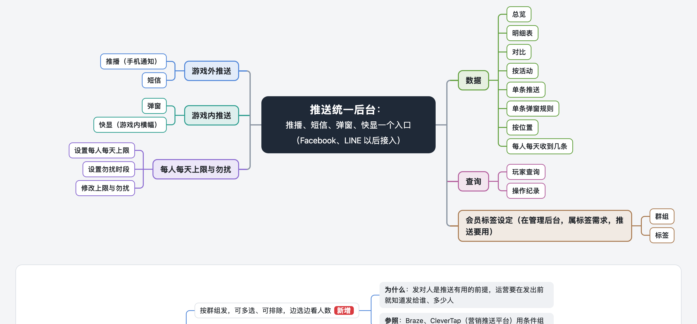

主管提的四件事都已改进导图。弹窗内容按你说的认真想过：活动和礼包本身就是内容，不用再包一层。已替你定为去掉，可推翻。

10/29 改弹窗内容按你 10/29 的判断改为保留：后台配图、基础设置配一次各规则复用，冷却仍在规则上。本页第 01 节和上面「弹窗内容：去掉」作废，见 弹窗内容保留。
10/29 补导图已按你 10/16 定的口径补了后台数据：弹窗点击后 24 小时内领取、购买，储值类推送发送后 24 小时内付费人数、金额，只作后台数据。10/28 晚交你的旧版在 评审版_定稿改_1027/推送系统后台集成需求/_旧版_1028交付/。
10/29 补去不去的判断标准和依据（运营同事草稿逐项核对、本期范围、各家官方文档）另写在 弹窗内容去不去的依据。
现在后台怎么配：每条规则里，每个活动各设时机、形式、次数、冷却
10/28 稿为什么拆出「弹窗内容」，为什么主管说得对
| 业界做法 | 谁这样做 | 冷却、时机设在哪 |
|---|---|---|
| 一条消息自带内容、触发、频率、冷却 | Braze、Firebase、OneSignal、CleverTap、MoEngage、Airship、神策 | 消息上，消息本身就是规则 |
| 内容是独立对象，被多条规则引用 | Google Ad Manager 素材库、Metaplay、Balancy、PlayFab | 规则上；内容上最多加一个「每人跨规则总上限」 |
| 冷却、时机设在共用的内容上 | 查到的产品里没有 | — |
我们游戏里，活动和礼包已经是独立对象（在营运活动设定、储值品项设定里建），相当于 Ad Manager 的素材、Metaplay 的 offer。弹窗规则直接引用它们，就是业界第二种做法；10/28 稿在活动外面又包了一层，这一层业界没有。
改后各设置放在哪
| 设置 | 10/28 稿 | 现在 |
|---|---|---|
| 显示方式 | 弹窗内容 | 规则里的每一项 |
| 大厅哪一次进入弹 | 弹窗内容 | 规则里的每一项 |
| 频率（每天、每周、每 N 天或活动期间几次） | 弹窗内容，跨规则、跨位置合计 | 规则里的每一项；同一活动在本位置各条规则里弹过的合计，不再跨位置合计，破产时不会因为大厅弹过就不弹 |
| 冷却 | 弹窗内容 | 规则 |
| 玩家符合多条规则时怎么弹 | 位置 | 位置（不变） |
少了什么、怎么补
留着的风险
另一个选项：保留弹窗内容，只放显示方式和大厅弹出时机，次数、冷却放在规则里（图片随活动、礼包本身配置，本期不在推送后台换；10/29 改正，原写「显示方式和宣传图」）。代价是运营每配一个弹窗都要先多建一个对象、多一页。推荐去掉。
原来只能分游戏外、游戏内两页看全部推送：找不到某一条、某个活动，也不能挑几条来比。现在先列运营要回答的问题，每个问题都有地方答。
| 运营要回答的问题 | 在哪看、用什么筛 |
|---|---|
| 这周哪条推播点击率最低？ | 明细表：推送方式选推播、日期选本周，按点击率排 |
| 编号 43 的推播效果怎样？ | 搜编号 43，点进单条：每一步少多少人、按平台和语言拆 |
| 「回流礼包」的推播、短信、弹窗合起来怎样？ | 按活动：各推送方式一行，另给合计人数（同一人只算一次） |
| 条件触发的推播比定时的好还是差？ | 总览：筛「条件触发」与「定时」各看一次 |
| 这条推播 iOS 和安卓各怎样？ | 单条：按平台拆 |
| 大厅弹窗哪条规则效果最差？ | 位置：大厅下各条规则按点击率排 |
| 回流玩家这周收到的推送整体怎样？ | 总览：日期选本周，按收到的人属于哪个群组拆开，看回流那一行 |
| 新写的这条和上周那条比，哪个好？实验组和对照组呢？ | 对比：勾选几条并排看，按发出后同样时长（如 24 小时）对齐，附同一推送方式前 30 天平均 |
| 原来 | 现在 |
|---|---|
| 预计上限拦截 | 预计因每天上限收不到的人数 |
| （10/24；今天起 7 天内只发这一次） | 删掉。这是算预计人数时的范围注释：只算今天起 7 天内的发送，这条每周六发，7 天内只有 10/24 一次。数字是系统自动算的，但这句注释对运营没用，「今天」也看不出是哪天。确认框改为写出按哪一次算，如「按首次发送 10/24 算，之后每次发送前重算」。 |
| 弹窗形式：活动本身、活动广告页 | 显示方式：直接打开它的页面，或先弹一张宣传图，点了再进（我方理解，已列进研发确认） |
全图另请没上下文的人按主管眼光逐个词复述，复述不出的都改了，例如：「位置」在弹窗里是「在什么情况下弹」、在快显里是屏幕位置，快显改叫「显示在哪」；「上传名单」与「按名单发停用」读着矛盾，改成「营销部门另外按名单发、按周期排程的短信，改在这里发」；四个新标签补了怎么算；点击率写明分母。